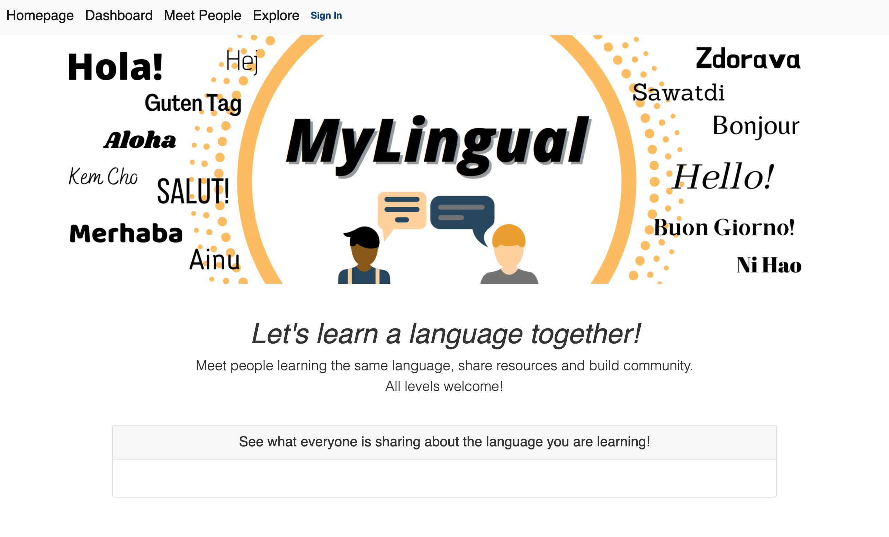

MyLingual
Project Overview
Concept: Lauren Euge
My Roles: UX Design Lead, Writer, Front-end Developer, Project Manager
Time Period: 2 Weeks (August/September 2020)
Design Tools: Figma, Pen & Paper
Technologies: HTML5 / CSS3 / Bootstrap / JavaScript / Node / Express / MySQL / Handlebars / Sequelize / Bcrypt / Heroku
MyLingual is a web-based social network that connects people who are learning the same languages. Users can share and discover new language resources, while immersing themselves in a supportive, knowledge-filled community.
We decided on this project because a member of our group was learning a foreign language and was having trouble finding a place to connect with other student becuase of the quarantine. Many people in our class expressed a similar sentiment, so we designed an app to alleviate their difficulties.
User Interviews
We interviewed our classmates, who had experience using self-paced language learning applications. Our main goal for the user interviews was to:
- • Gain insight into how they used self-paced language learning apps.
- o What made them choose language apps over online small group courses?
- o How often did they use the language apps?
- - If using during the pandemic, how has their usage changed?
- o What are their pain points with the apps?
- o What features do they like about the apps?
The individuals we interviewed ranged from age 26-45; were single, married with children, single with children, and in relationships. Their professions ranged from student to audio engineer. All of the users we interviewed had successfully used language apps. This helped us in better understanding our user base and product goals. From the interviews, we found that:
- • All of the users chose language apps over small classes because of time and money.
- • All of the users used an app at least three times a week pre-pandemic.
- • Of the users utilizing a langauge app during the pandemic, 50% increased their use to daily.
- • All of the users would like more human-to-human interaction within the apps.
- • All of the users liked that they could learn at their own pace using the apps.
- • All of the users liked when the apps were free.
After the interviews were conducted, I created two user personas to visually represent the information we gathered. These tangible representations reminded us of our user's needs and goals.


Based on our research and personal experience, we found that language learning apps leave something to be desired when it comes to group and human-to-human learning opportunities. We decided to create an application that could be used to exclusively learn languages with other people.
To further illustrate our user and their pain points, I created a storyboard. It captured the frustrations of Sharon, a lifelong learner, who wants to find other French students to interact with during her language studies.

We designed a decision flow diagram that illustrated the choices the user had when visiting the site. Once signed in, the user is automatically directed to their dashboard. All initial decisions are made from that page.

Due to the scope of the project and the limited amount of time, we chose to go straight into creating low-fidelity wireframes. I created the below wireframes to demonstrate each page that would need to be developed.

The testing of the wireframes came as the back-end models were being established. The back-end developers asked us to redesign the photo uploading function, as it would add more work than they could complete in the given timeframe. The solution for this came from our users, who suggested that we use avatars instead of photos. This would make them feel comfortable allowing their children to use the site. They also noted that a separate page for sign in and sign up might be uneccessary. Less pages to navigate to get signed up/in would be a better experience.
I incorporated the user and developer feedback into a high-fidelity design that included the final copy, fonts and color pallet. A group member created the custom logo. This was the final iteration before development.
See PrototypeAs a full-stack project, this idea had a much larger scope than anything we had done up to that point. There was much more preparation that needed to be done both on the front and back ends to ensure that we could connect the application successfully. A few hiccups notwithstanding, we developed our MVP almost entirely to our specifications.
Visit Site

MyLingual is unique in that it is designed to only be a social network for language learners. The aim is for people to learn with each other, not just through individual lessons. We successfully created a product that provided a solution to our problem statement.
I assumed multiple roles for this project, including UX Design Lead, Writer, Front-end Developer and Project Manager. As Project Manager, I created a Google Doc that used the Kanban Method to keep us on track throughout the development process, scheduled production check-ins, prioritized our daily needs, and created the deck for our class presentation.
We were all very proud of the final product. Moving forward, we would like to continue to develop MyLingual. Future development plans include:
- • Allow users to add other users to a friends list in dashboard.
- • Add a 1-1 chat feature for users to talk to each other.
- • Add video hosting capabilities.
- • Add a translation feature.
- • Add the option for organizations to add their class materials.
← Back to Portfolio